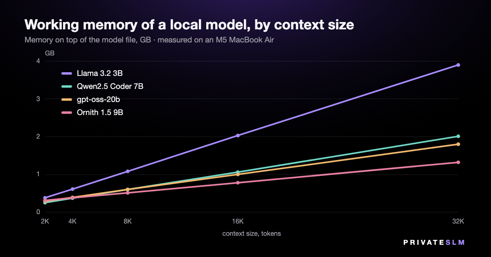

How much RAM do you need to run an LLM on a Mac? Measured
Most answers to this question are rules of thumb. We measured it instead, on a MacBook Air with an M5 chip and 24 GB of memory, for 12 models from 1.2 to 20 billion parameters. The memory a local model needs has two parts, and the second one is easy to overestimate.
The short answer
- The file. A 4-bit model takes about 0.6 GB per billion parameters, and all of it has to be in memory.
- The working area. On top of the file the model needs room for its context. For current models that is small — 33 to 115 MB per 1,000 tokens of context in our measurements. For models built on older designs it is not: one 7B in the test needs 2.2 GB for a 4,096-token context.
- So: a 3B model is a 2.6 GB job, a current 7B about 5 GB, and a 20B model 13.4 GB even with a 32,000-token context — it ran on our 24 GB Mac without trouble.
Part one: the file
| Model | Parameters | File | GB per B | Working area, 4K context | Total |
|---|---|---|---|---|---|
| LFM2.5 1.2B | 1.17B | 0.73 GB | 0.62 | 0.14 GB | 0.9 GB |
| Qwen2.5 1.5B | 1.54B | 0.98 GB | 0.64 | 0.24 GB | 1.2 GB |
| LFM2.5 2.6B | 2.70B | 1.68 GB | 0.62 | 0.21 GB | 1.9 GB |
| Gemma 2 2B | 2.61B | 1.70 GB | 0.65 | 0.56 GB | 2.3 GB |
| G9v3 3B | 2.99B | 1.90 GB | 0.64 | 0.34 GB | 2.2 GB |
| Llama 3.2 3B | 3.21B | 2.01 GB | 0.63 | 0.61 GB | 2.6 GB |
| Nanbeige4.2 3B | 4.17B | 2.44 GB | 0.59 | 0.87 GB | 3.3 GB |
| Phi-4 Mini 3.8B | 3.84B | 2.48 GB | 0.65 | 0.68 GB | 3.2 GB |
| MentaLLaMA Chat 7B | 6.74B | 4.08 GB | 0.61 | 2.24 GB | 6.3 GB |
| Qwen2.5 Coder 7B | 7.62B | 4.68 GB | 0.61 | 0.37 GB | 5.0 GB |
| Ornith 1.5 9B | 9.20B | 5.77 GB | 0.63 | 0.38 GB | 6.1 GB |
| gpt-oss-20b | 20.91B | 11.61 GB | 0.56 | 0.39 GB | 12.0 GB |
4-bit GGUF files (Q4_K_M; Nanbeige4.2 is IQ4_XS). Working area measured after generating with a 4,096-token context.
Across the 12 files the ratio runs from 0.56 to 0.65 GB per billion parameters. Use 0.6 and you will be within a tenth. The file is memory-mapped rather than copied, but it still has to be in RAM for the model to run at full speed — count all of it. (How mapped files are counted differs between operating systems; we wrote about that separately.)
Part two: the working area
This is where the model keeps what it has already read: every token of the conversation leaves an entry in every layer. It grows in a straight line with the size of the context — and note that it is the context you allocate that costs memory, not the part you have filled.

| Working area, GB | 2K | 4K | 8K | 16K | 32K | Per 1,000 tokens |
|---|---|---|---|---|---|---|
| Llama 3.2 3B | 0.38 | 0.61 | 1.08 | 2.03 | 3.90 | 115 MB |
| Qwen2.5 Coder 7B | 0.25 | 0.37 | 0.60 | 1.06 | 2.01 | 57 MB |
| Ornith 1.5 9B | 0.31 | 0.38 | 0.51 | 0.78 | 1.32 | 33 MB |
| gpt-oss-20b | 0.29 | 0.39 | 0.60 | 1.00 | 1.80 | 49 MB |
Memory the process uses on top of the model file, by context size in tokens. The last column is the slope between 4K and 32K.
Two things stand out. First, the working area has little to do with the size of the model: the 3B model here needs more per token than the 20B one. Second, for all four it is modest — a 32,000-token context costs between 1.3 and 3.9 GB.
Why an older 7B needs gigabytes more
MentaLLaMA Chat 7B is a fine-tune of an earlier generation of 7B model, and its working area for a 4,096-token context is 2.2 GB — about 547 MB per 1,000 tokens, against 57 MB for Qwen2.5 Coder 7B, a model of the same size.
The difference is one design decision, and it is written in the files. Each layer stores a "key" and a "value" for every token, for every attention head. The older model has 32 heads and stores 32 sets. Qwen2.5 Coder 7B has 28 heads that share 4 sets; Llama 3.2 3B has 24 heads sharing 8. Multiply layers by stored sets by head size and you get the numbers we measured, to within a few percent:
| Model | Layers | Heads | Stored sets | Arithmetic, per 1,000 tokens | Measured |
|---|---|---|---|---|---|
| MentaLLaMA Chat 7B | 32 | 32 | 32 | 524 MB | 547 MB |
| Llama 3.2 3B | 28 | 24 | 8 | 115 MB | 115 MB |
| Qwen2.5 Coder 7B | 28 | 28 | 4 | 57 MB | 57 MB |
Layer and head counts from each file's GGUF header; 128 values per head, a key and a value, 2 bytes each. The measured figure for MentaLLaMA is its working area divided by its 4,096-token context, which also includes fixed buffers.
The practical point: "a 7B model needs 8 GB" was a fair rule for the older designs with a few thousand tokens of context. It overstates what a current 7B needs by about three gigabytes.
What fits which Mac
We have one Mac, so only one row of this table is measured. The rest is arithmetic from the numbers above, with one rule of thumb we are stating rather than proving: keep the model — file plus working area — to about half of the machine's memory, and macOS and your other apps keep theirs.
| Mac memory | Comfortable budget | What that runs | Basis |
|---|---|---|---|
| 8 GB | about 4 GB | Models up to 4B with room to spare (Phi-4 Mini 3.8B needs 3.2 GB). A 7B is 5–6 GB: over budget. | Arithmetic |
| 16 GB | about 8 GB | 7B and 9B models (6.1 GB for the 9B here), with long contexts. A 20B model at 12 GB is not a comfortable fit. | Arithmetic |
| 24 GB | about 12 GB | Everything in this test, including the 20B model with a 32K context (13.4 GB). | Measured |
| 32 GB | about 16 GB | Models around 27B, by the 0.6 GB rule. | Arithmetic |
| 64 GB | about 32 GB | Models around 50B; a 70B at about 42 GB takes two thirds of the machine. | Arithmetic |
Half the machine is a comfortable target, not the ceiling: on the 24 GB test machine, the amount of GPU memory macOS recommends one app stay within is 19.1 GB.
Speed is a separate question
Fitting in memory says nothing about how fast a model runs. On the same Mac the 20B model generated 48 tokens a second and the 9B one 21. The speed measurements, including what happens on a fanless Mac after two minutes, are in Local LLM speed on an M5 MacBook Air.
How we measured
- Machine and engine. MacBook Air (M5, 24 GB), macOS 26.5; llama.cpp build b10488 with every layer on Metal — the build privateSLM 2.3 ships.
- Working area. The process's own peak memory footprint after loading the model and generating — the same measure Activity Monitor reports as Memory. It leaves out the mapped model file, which is why we add the file size back.
- Context sizes. Four models were run again at 2,048, 8,192, 16,384 and 32,768 tokens, one process per size.
- Not measured. What happens when a model does not fit; other quantizations (an 8-bit file is nearly twice the size); image input.
The code and data are public: bench.c, run_all.sh and the raw results.jsonl (55 runs).
On iPhone and iPad
The same arithmetic applies with less room to spare, which is why privateSLM states the memory every model needs before you download it and hides the ones your device cannot run. The catalog has a page per model. In the app the context is 4,096 tokens by default, adjustable from 2,048 to 8,192 under Settings.
Buying a Mac for this? See which Mac mini to buy for local AI.